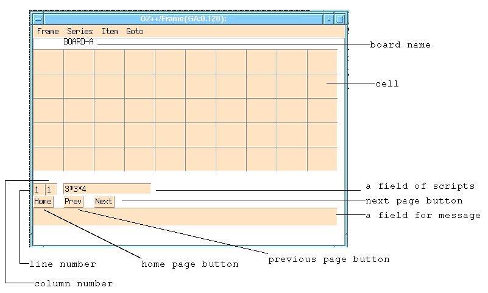

OZ++/Chess is a chart calculation program that has been implemented into OZ++/Frame. The characteristics are:
Fig. 4.2--1 shows the initial screen of OZ++/Chess. Input row and column number. Always press the Return key to reflect input value. The board name is optional. Board name can be used when comparing the cell board to other existing cell boards. Click the Create button to create and move to a new board.
|  |
Fig. 4.2--2 is an example of a board. Set script to each cell. Input "1" in the row and column fields such as when substituting script in cell row 1 column 1. Then, enter script in the script field.
Scripts of OZ++/Chess uses delayed evaluation. Evaluation is conducted only when execution is specified. To execute evaluation, point and click the cell with the mouse and press the Return key.
Constants
The most simple script is a constant. Constants consist of two types: numbers and characters. For numbers, integers and decimals can be accounted for. There is no expression for exponents. If an entry is judged not to be a number, then the entry will automatically be interpreted as a character string.
e.g.
Arithmetic operations
This program uses the four fundamental rules of arithmetic. Remainders in divisions of integers are ignored.
e.g.
Character string operations
This program uses combine operation for character string operations. This is conducted by using "+".
e.g.
Cell reference
Enter 'n@m' when referencing row n column m. For row n column m of board A, input 'A#n@m'. For row n column m of board A registered in the name directory as ":chess:B", input ':chess:B:A#n@m'.
Refer a cell within a script to evaluate the script cell and acquire evaluation value. Take caution for scripts self-evaluating its cell will run constantly.
Substitution
Enter '=' on the right side of the cell reference then enter a formula to substitute the evaluation of the right side with the formula on the left.
e.g.